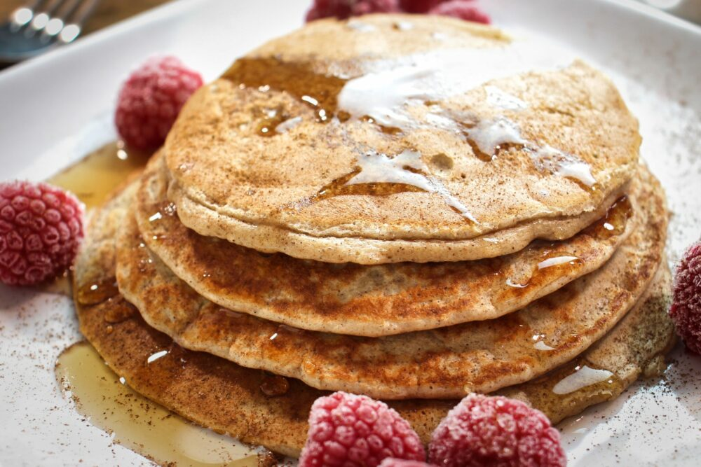

Protein Pancakes Recipe

Fed up with oats or eggs for breakfast? Try this delicious recipe for protein pancakes
Ingredients
- 50gr porrige oats
- 25gr whey protein powder of your choice
- 1/4 tsp baking powder
- 1 large egg
- 100 ml milk of choice
- 1 tsp cinnamon
- light cooking spray
Method
- To make the protein pancakes, add the oats to a blender and blitz until it resembles fine flour. Add the protein powder, baking powder, egg, milk and cinnamon to the blender too and blitz everything until you have a texture like a pancake batter.
- Heat a lightly oiled frying pan over medium-high heat. Pour the mixture onto the pan, using approximately ¼ of the total mixture for each protein pancake.
- Tilt the pan in a circular motion so that the batter coats the surface evenly.
- Cook the pancake for about 50 seconds until the bottom is light brown. Loosen with a flexible spatula or fish slice, flip over and cook the other side. Serve hot with your filling of choice.
What are some healthy toppings for protein pancakes?
Healthy toppings for protein pancakes include fresh fruit, nut butter, chopped nuts, and seeds. You can also drizzle some honey or maple syrup for a touch of sweetness. However, it's important to use these toppings in moderation to keep the overall calorie and sugar content in check.
Back to main page